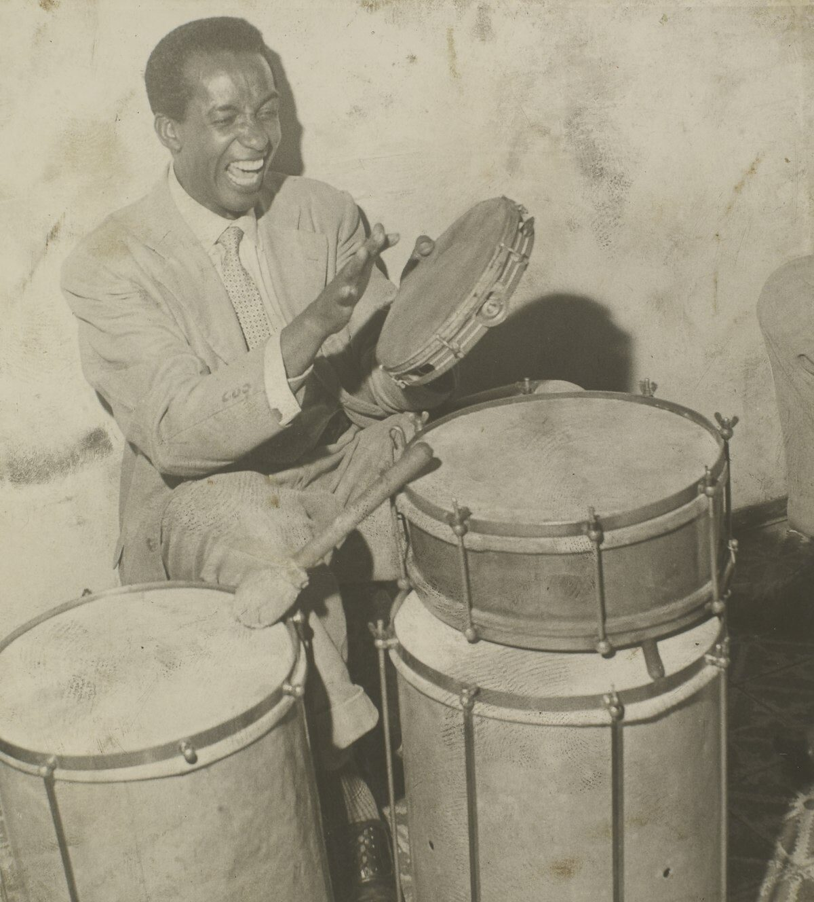
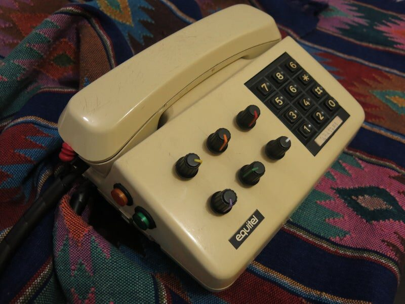
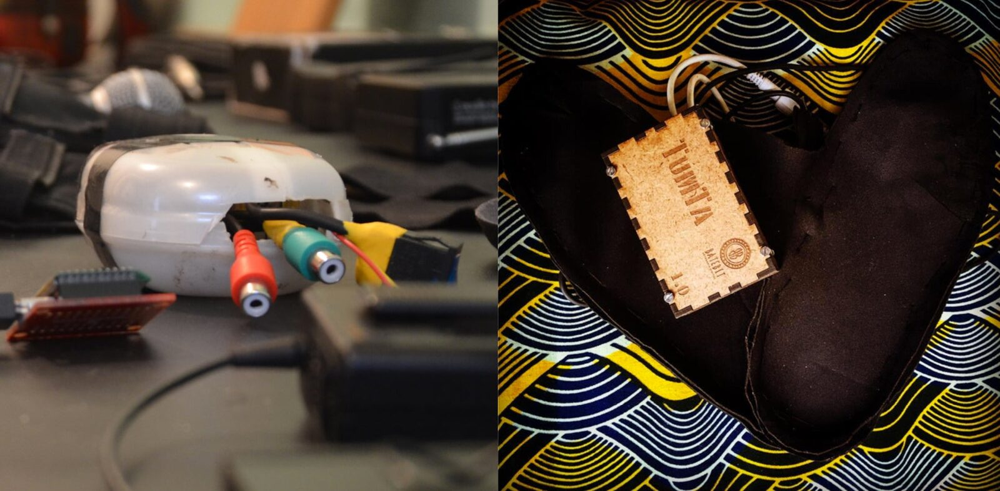
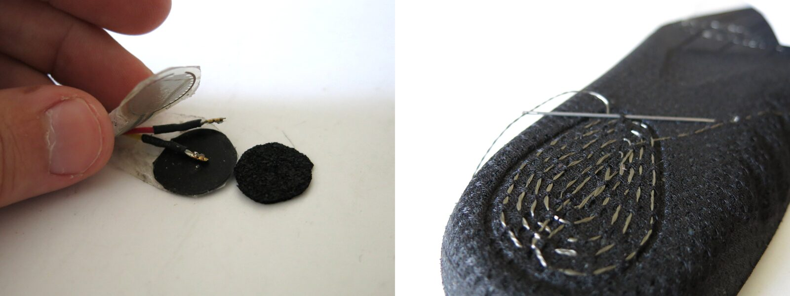

Gambiarra and Techno-Vernacular Creativity in NIME Research
Abstract
Over past editions of the NIME Conference, there has been a growing concern towards diversity and inclusion. It is relevant for an international community whose vast majority of its members are in Europe, the USA, and Canada to seek a richer cultural diversity. To contribute to a decolonial perspective in the inclusion of underrepresented countries and ethnic/racial groups, we discuss Gambiarra and Techno-Vernacular Creativity concepts. We believe these concepts may help structure and stimulate individuals from these underrepresented contexts to perform research in the NIME field.
Introduction
There has been a growing concern at the NIME Conference for inclusion and diversity. In 2018, the Diversity Statement was published, and the “Pamela Z Award for Innovation,” now called “Pamela Z Award for Innovation, Diversity, and Inclusion,” was created. The importance of discussing philosophical and political matters regarding NIME has also been gaining momentum. There is an increasing number of examples that raise new questions beyond technical approaches centered on artifacts. Some works reflect on broader issues around sociopolitical relationships, representativeness, and decolonial perspectives [1][2][3][4].
The assignment of Diversity Officers in 2020 shows how this issue has become a priority, allowing a continuous effort to make the community more inclusive and diverse through broader perspectives. A first Diversity Workshop was held in January 2021 and brought part of the community together to discuss gender, ethnic/racial, economic, language, disability, and global diversities.
In this paper, we address underrepresented countries and ethnic/racial groups. The NIME 2020 Survey could help us to understand the urgency to discuss these diversities. The results showed that most (82%) attendees lived in Europe, the USA, or Canada. Regarding the participants’ nationality, 72% were born in these same regions 1.
On this survey, race and ethnicity were measured through an open question: "What ethnic background do you identify with?". No participant used the word “black” or any other word related to African descent. It is complex to discuss ethnicity since each person may understand it differently as related origin, culture, ancestry, related or similar to race, social similarity, or religion, as shown by a study in the USA [5]. In a global community such as NIME, the concept of ethnicity and race is undoubtedly even more complex and should be a topic for further discussion. Nevertheless, it is alarming that no one was from the African continent or wrote anything related to African descent. Surveys are helpful tools to help us understand how we can improve diversity in many ways. Efforts to broaden its range and improve its precision will certainly direct our community for the better.
Neocolonialism and Decoloniality
As a good starting point to promote these diversities, we can understand how these underrepresented groups relate differently to technology from a respectful perspective. Without a critical approach towards global and ethnic/racial inclusion, it is easy to fall into neocolonial practices of assistencialism and inferiorization of cultures.
The geographic division of the World in terms such as "developed countries" and "underdeveloped/developing countries" is a common approach for the inclusion of underrepresented countries such as the "SIGCHI Guidelines for the Developing World" [6]. These initiatives are interesting, but these geopolitical division concepts maintain a colonial hierarchy depicting one part as prosperous and more advanced, while the other is struggling with "poverty, hunger and ignorance" and in need of assistance. As some leaders of this global order have been clearly stating over the last decades:
"Throughout Latin America millions of people are struggling to free themselves from the bonds of poverty and hunger and ignorance. To the North and East they see the abundance which modern science can bring." J.F.Kennedy, Special Message to the Congress, Washington DC, 14 March 1961 [7].
This concept of underdevelopment itself can be understood as a neocolonial strategy. It was first used after World War II, in 1949 by the USA's former president, Harry Truman [7], one year after creating the World Bank and its International Monetary Fund. This appearance of international aid and inclusion has been the dominant practice of imperialism in the last decades. They have been imposing the neocolonial agenda to keep the "developed countries" producing and selling advanced technology. In contrast, the "developing countries" maintain their dependency, serving mainly to roles of consumer markets and producers of commodities in a vicious cycle of growing debts and increasing their underdevelopment[8].
Decoloniality shifts the understanding of these geopolitical forces into a broader epistemological comprehension about the matrix of power of coloniality and its lasting effects. It is also a method and paradigm of restoration of knowledge that was erased by the colonial process. It offers new multicultural approaches towards the structure of knowledge considering indigenous people, racialized groups, and colonialism targets with dignity from their cultural references and values [9].
We believe this approach can contribute to discuss diversity in the NIME community to rethink what is a valuable contribution without comparing it to how science, technology, and art are done in wealthy institutions from Europe, the USA, and Canada. New interfaces for musical expression created in less privileged contexts, for example, should not be understood as a less relevant step concerning recent European research but part of a different cultural context of music, technology, and research. A more diverse community should start from the appreciation of different works from multicultural and pluralistic perspectives.
We attempt to help on this debate by presenting the concepts of Techno-Vernacular Creativity (TVC) - "a form of technological agency, speaking to the ways in which tools and external devices help underrepresented ethnic groups navigate the world" [10] and the Brazilian word "Gambiarra" that refers to the improvised technical solutions in a context of limited resources [11], which has some intersections with the concepts of hacking and technological disobedience[12] as we will discuss further.
Techno-Vernacular Creativity
In the context of a decolonial discussion, Nettrice R. Gaskins highlights how ethnic communities voluntarily subvert or remix dominant technologies based on incorporating local cultural values and practices [10]. The author elaborates the concept of Techno-Vernacular Creativity (TVC) to oppose the notion that historically marginalized social groups—such as blacks, Latinos, Afro-Americans, indigenous peoples—are mainly consumers of mainstream technology or are always victimized by the effects of this production.
By definition, the word vernacular refers to a native language or a dialect of a specific population instead of dominant forms of communication. Gaskins, in turn, associates this idea “as part of a system of communication and creative expression that enables artists and practitioners to create work using the dynamic properties of different technologies” [13].
The author proposes Techno-Vernacular Creativity as a lens to examine the different ways in which these groups engage with technology and develop their methods of experimentation and technological agency with or from mainstream technologies in response to the forces of oppression. Thus, Gaskins points out that TVC builds a framework of "cultural artifacts, practices, and knowledge that regularly challenge constructed meanings of 'dominant technology'" [10].
In other words, Techno-Vernacular Creativity represents a vast set of adaptations of mainstream technologies carried out in the periphery of the planet. Gaskins highlights three methods and expressive forms of TVC that characterize it and distinguish it from the dominant technology:
Re-appropriation, or the cultural process by which underrepresented ethnic groups reclaim artifacts from the dominant culture and the environment—for example, African American and Latinx artists who use or alter commercial images (e.g., ads, logos) in their work.
Improvisation, or the spontaneous and inventive use of materials— for example, practitioners who use on-the-spot techniques to make graphic, contemporary quilts and quilted projects.
Conceptual remixing, “bricolage,” tinkering, or making do with whatever is on hand—for example, artists who combine different, often seemingly disparate knowledge sets, artifacts, identities, and practices. [10]
In summary, as described by Gaskins, the Techno-Vernacular Creativity has a purposely multicultural and pluralistic nature that provides a framework for analyzing the strategic appropriations. These appropriations subvert the meaning of technologies to situate them in specific cultural contexts, reversing systems to proliferate these devices' new and creative uses.
An example cited by the author is the sampling technique, well known in rap but also used in several lines of afrodiasporic electronic music, such as jungle, singeli, footwork, funk carioca, bregafunk, and others:
Sampling as a method of Techno-Vernacular Creativity shows an interaction between cultural artifacts and modes of practice (diagramming), as well as being a type of reappropriation. The sample is a discrete unit of information (i.e., a sound, shape, or motif) that can be repeated to create a pattern. [...] Hip-hop was the first popular music genre based on the art of sampling—originating from 1970s DJs who experimented with manipulating vinyl on two turntables and an audio mixer [10].
Therefore, Techno-Vernacular Creativity affirms the creative potential and the technological agency of marginalized populations. In saying this, are we not claiming that blacks and other social groups have a specific and determined way of using technology or that every instrument in Latin America is based on Gambiarra's design process. We approach TVC to point out a way to apprehend and systematize its multiple methods, seeking to legitimize them in science, engineering, and technology. "TVC practitioners employ what Beth Coleman refers to as technology's embedded functions of self-extension to liberate people from inherited positions of abjection toward greater expressions of agency" [10].
Gambiarra
Gaskins' proposal for a Techno-Vernacular Creativity finds many similarities with what is known as "gambiarra" in Brazil. According to Giuliano Obici, gambiarra is a popular Brazilian term that describes "an improvised and informal way of solving an everyday problem when needed tools or resources are not available" [14]. Over time, the term takes on a more expansive meaning, "an unconventional approach to problems involving inventiveness, intelligence, creativity and the ability to come up with extemporaneous solutions to problems; an uncommon, unusual practice; vernacular, autochthonous, popular art; the act of taking advantage of a situation; or an irregular, illicit, dishonest, marginal, illegal or fraudulent custom" [14].
Gambiarra is generally considered at the same time negative, humorous, and ingenious. The colonized minds tend to consider it inferior to industrial technology from abroad. Still, some artists and activists, such as the Gambiologia collective [15], tend to invert this perspective as an identitarian symbol. It is peculiar to the Brazilian culture and represents how we use and develop technologies in many aspects.

Example of a gambiarra made to fix broken glasses. This picture is part of the series “Gambiarras” by the artist Cao Guimarães.
From a global perspective, Obici indicates that the gambiarra is related in meaning to some English words such as do-it-yourself and makeshift and is close to other cultural contexts. In India, Pakistan, and some African countries, jugaad refers to the assembly of low-cost vehicles and provisory solutions. In Cuba, Revollico and Rikimbill refer to technological disobedience[12] or resistance to the scarcity of material resources and technological access.
In this way, the notion of gambiarra illustrates a vast repertoire of creative practices that transform, adapt and resignify technologies based on material limitations. In some cases, this means working with technologies that have been made obsolete in major economic centers. Funk Carioca DJs only gained access to the Roland TR-808 drum machine after Roland stopped manufacturing it. DJ Grandmaster Raphael, a funk pioneer, reports: "We played the vinyl records from abroad and listened to a punch, a strong bass, that had no idea how it was made. When we came to understand that it was the sound of TR-808, Roland had already stopped manufacturing" [16].
In other cases, working creatively from the perspective of gambiarra in music refers to using cheap and accessible materials to develop the own instruments, as we will discuss this in further detail in the following sections.
This way, Messias and Mussa [17] are some steps ahead by proposing an epistemology of gambiarra that breaks precariousness as regional socioeconomic inequality to affirm an idea of precariousness and improvisation as a way of knowing. For the authors, the gambiarra is related to a "technical dimension of knowledge" In other words, the gambiarra is no longer associated with the ephemeral (as described by Obici) to be analyzed as a "cosmotechnique" that forms a new set of knowledge:
The gambiarra as mediation does not consist of a form of resistance exclusive to a precarious place – as if one or more subjects were overcoming adverse conditions to reach a higher level of technical production. It is, in fact, a decolonial cosmotechnique [9] that emerges from precariousness. [17]
Therefore, by reappropriating technologies, the gambiarra operates a semantic twist on objects that invents a horizon of new musical possibilities. Returning to our examples: sampling has become a fundamental procedure in several electronic music movements, from Detroit techno to Dar Es Salaam singeli and Funk Carioca. Gambiarra is an improvised and non-specialized solution that takes advantage of available materials, whether in high or low technology, with hydraulic, mechanical, electronic, or digital devices. In other words, gambiarra is a technological action based on improvisation and adaptation of technologies mostly (but not exclusively) in economically precarious contexts, which potentially allows the emergence of new uses for existing devices and forms of artistic expression.
Historical Cases of TVC and Gambiarra
In this section, we will present some historical musical instruments that illustrate the concepts and principles discussed above, particularly the ideas of re-appropriation, improvisation, and conceptual remixing described as methods of TVC by Gaskins. We do not want to limit or restrict the creation of these musical instruments to such a framework. Our goal here is to exemplify how the theory provides us with epistemological lenses to analyze further the various possible ways of developing, engaging, and creating new technologies in the field of music in contexts of material precariousness.
Surdo
In the 1930s, the first escola de samba, Deixa Falar, experienced growth in Rio de Janeiro. More and more people followed the Carnaval parade, singing and dancing on the city streets. However, this growth presented an acoustic problem for the samba players: in the crowd, people could not clearly understand the music that was being played and sung.
To solve this problem, the composer Alcebíades Barcelos (aka Bide) used his technical skills as a shoemaker and covered a 20-kilogram butter can with a moistened cement paper bag, tying it to the can with wires and thumbtacks. The result was a brilliant creation of a new (for the time) interface for musical expression: Bide had invented the surdo (Image 2), the bass drum that changed the way of playing samba and remains today as the instrument marks samba's beat.


Ismael Silva, Brazilian samba musician, playing a pandeiro next to a snare drum and two surdos designed by Bide (1960)
Public domain / Arquivo Nacional Collection
Bide's creation of the surdo exemplifies a form of improvisation. Using inexpensive materials available in his shoemaker's daily life and combining them in an inventive way, Bide developed an instrument that not only solved his acoustic needs but also made a new artistic language flourish - samba with a focus on percussion instruments, the urban samba in Rio, which Franceschini called "samba de sambar" [18].
Turntable
As indicated by Messias and Mussa [17], gambiarra is not exclusive to precarious places. It allows us to observe that the flow of technologies does not occur in a unidirectional way, from top to bottom, from the center to the borders. Kool Herc, Afrika Bambaataa, and other rap DJs from the early 1970s developed musical procedures such as scratch, sampling, and looping that transformed their turntables (originally designed to be music players) into a musical instrument, which provided the sound bases for the new musicality of rap [19]. Years later, the music and audio industry started to design professional and expensive turntables and crossfaders that have DJing's purpose. DJ software such as Virtual DJ, among others, incorporated these techniques as a standard function of their system.
The act of affirming the record player as a musical instrument indicates a conceptual remix because Herc and Bambaata, among other DJs, radically transformed its use to the point of altering its essential meaning, the very purpose of the device. This was based on individual creations that added up and formed a consistent whole, adding different techniques and seemingly disparate knowledge sets.
TVC and Gambiarra in contemporary NIMEs
So far, we have presented the concepts of Techno-Vernacular Creativity and Gambiarra and showed how they could help us understand historical musical instruments' contributions. Perhaps a butter can with a cement paper bag or a technique to play vinyl records with crossfaders would not be considered relevant music technologies at the time. However, time showed how these inventions changed the history of music and music technology. Both inventors, Bide and Kool Herc, came from less privileged contexts and applied their knowledge in their cultural context for their musical community.
Contemporary NIME research made at the borders of capitalism may share some of these conditions. How can we make people from these places feel welcome to share their contributions at this conference? Would these contributions be considered relevant and original to our community? How can a decolonial approach and concepts such as Techno-Vernacular Creativity and Gambiarra help the inclusion of these underrepresented groups at NIME?
Making digital technology with available materials in an unprivileged context with a lack of infrastructure of a good laboratory, maker space, without access to the specific materials, tools, and standard processes can seem like only a negative set of baselines that would lead to poorer and less relevant instruments. The concept of gambiarra and TVC can help us understand how the development of DMI in these peripherical contexts can boost creativity exactly because of its limited set of possibilities.
In the following sections, we discuss the process of creating two NIMEs: Disque-Som and TumTá, created by the first and last authors of this paper. By presenting these instruments' design and development, we intend to highlight how a conceptual framework outside of eurocentric discourse can help understand how to promote and include diverse backgrounds for NIME research.
We presented a more personal description of the process, illustrating how the gambiarra cosmotechnique was present. Our point is that the precarious context was not necessarily a drawback on the conception and development but can be something that defines their main contributions.
We do not intend to present Gambiarra and TVC as methods that anyone can follow to create better NIMEs. However, we believe that these two concepts help understand the NIME development outside wealthy global centers. As a consequence of this discussion, we expect to globally include and encourage underrepresented researchers and developers in this field.
Disque-Som


Disque-som: A MIDI controller with a microphone and in-ear monitor made out of an old telephone
Disque-Som is a MIDI controller made out of an old telephone. We built it in 2012 by connecting its keys to an Arduino and adding potentiometers and buttons to its panel. The original speaker and microphone were adapted to jacks for connecting to the computer. It was programmed as a USB MIDI device to control a Digital Audio Workstation in a computer. It also has an external microphone and a speaker. It is a low-cost alternative for a hardware setup for music production. Except for the Arduino, we could scavenge all the parts from electronic waste, which could lead to a cost of less than US$5.00.
The first and third authors and Jerônimo Barbosa were part of the same research group at the university. Maybe because there was no laboratory infrastructure to conduct practical research, we started working together in a common space. At the time, there were no Fab Labs or maker spaces in our town, so the only space and tools we could use were our own. We urged to create music technology, and we did with the materials and processes we had access to at the time.
Our country's economic and political aspects (Brazil) make the infrastructure for digital electronics development particularly expensive. The cause is an explosive combination of the lack of local manufacturers of digital electronics components, high importation taxes for electronics (around 60%), high international shipping costs, and weak currency compared to the US Dollar and Euro. This reality is probably very close to other Latin American or African countries, and it is crucial to consider this context to understand how technology is made in these countries.
What is considered accessible in the USA, Canada, or Europe is rarely a global consensus. At the time of the development o Disque-Som, we had access to simple electronic components such as buttons, potentiometers, resistors, capacitors, and Arduinos. Besides, as tinkerers, we had the practice of keeping electronic waste. This telephone was lying around our working space, and we started making a MIDI controller out of it. The object was part of the first author's childhood, and he further developed the MIDI controller with a special affective connection.
Distant from the well-finished and efficient aesthetics of mass production, gambiarras are usually unique and can repurpose obsolete objects and electronic waste. A gambiarra does not need finishing, precision, or a rugged architecture. We can consider Disque-Som a gambiarra because it repurposes an existing industrial object within a precarious context based on an easy-to-make and straightforward solution.
This NIME's main contributions are its low cost based on simple materials, the environmental friendliness related to the reuse of electronic waste, and the semantic connection this object has to communication and affection. The precarity was a creative drive that guided the process. Perhaps, in other contexts, we could have designed it differently, which would probably lead to other qualities.
Gambiarra and TVC are not techniques we consciously chose to work with but concepts that can help us understand our processes and lead to relevant NIME Research. Gambiarra is part of the technical culture of most Brazilians. Besides, Techno-Vernacular Creativity brings a broader conceptual framework, not exclusively tied to one local context, but to a broader set of localities that share the same principles of reappropriation, improvisation, and conceptual remixing. TVC can help to understand how technology can be inspired by local popular culture. Material precarious contexts do not imply low quality or less relevant artistic results.
TumTá


TumTá in one of its first prototypes (left) and the latest version (right)
Another project developed at the same time was the TumTá [20]. It consisted of a homemade pressure sensor in the form of insoles to trigger sound samples through foot stomps. The sensor was made with conductive foam and conductive threads to resist the intense stomping. The dancer wore the transmitter in the waist, so it was not subject to the same impact as the devices connected to the feet. The instrument’s main contribution is the cultural connection to a specific musical and dance tradition.
This instrument came from the artist Helder Vasconcelos's demand to our research group Mustic, at Universidade Federal de Pernambuco, intending to sonify the movements from the dance traditions of Cavalo Marinho and Maracatu Rural (popular traditions from the state of Pernambuco, Brazil). It was made with a repetitive foot-stomping dance to generate a repetitive beat [20].
Helder Vasconcelos talking about his artist process (subtitles available in English) and dancing with TumTá and other instruments he used in his performance
The TumTá's development process was full of gambiarras and can be better understood through the lenses of TVC. In its beginning, the project did not have any external funds, only a few personal resources. Because a relative of the first author was coming from the USA to Brazil, he asked for some electronic components like FSR sensors, an XBee, and Arduino Fio (compatible with XBee).
The first test with the pressure sensors was amazing, and we managed to get precise onset detections with relatively low latency. But, on the second day of testing, each sensor broke in two. At this part of the process, we could not afford to buy a new sensor and then try again to enhance its surrounding structure. Studying how that sensor was made, we found out that we could use a conductive foam (used for electrostatic discharge prevention that came with the electronic components) as a pressure sensor. This choice for conductive foam came from a gambiarra that led to a new research path that probably would not happen in the context of abundant access to the sensors.


The home-made pressure sensor on its first gambiarra (left) and the latest version (right)
After many tests and studies trying to improve this rough homemade sensor, we found a supplier for Electrostatic-safety devices from China that sold insoles made from conductive foam. The first author passed as a shoe-maker to get some free samples, and we got one that was luckily the same foot size as Helder's. This capacity to improvise and find unusual solutions to materials made for particular goals is an excellent example of gambiarra.
After developing this sensor, we found in the NIME-related literature that one of the biggest challenges in designing wearable instruments for the feet is to make them sturdy enough to resist its impacts. Joseph Paradiso wrote: "A dancer's foot is indeed a hostile environment for sensitive electronics, and as we've been reminded repeatedly by experience, everything needs to be well attached or latched down - anything that can move will sooner-or-later break off" [21]. We developed a solution through TVC and Gambiarra, reappropriating the sensors' industrial technology and insole factories to our needs through much improvisation because of a context of restricted access to sensors and electronic components.
It is also part of TVC the local cultural aspects driving the development of technology. A DMI that can only trigger two sounds could be considered with low expressive potential. Nevertheless, it was inspired by many percussive Brazillian instruments like the surdo, zabumba, agogô, preaca, triângulo, gonguê, and many others that are very expressive with only one or two different sounds. These inspirations helped us design instruments to make music for similar genres for which these instruments were designed.
Perhaps other musical contexts would not consider TumTá expressive enough since it only allows to trigger two different samples. However, we believe that it is crucial to consider the musical contexts for which each instrument was designed. The concepts of expressivity, efficiency, and diversity cannot be objective technical qualities of the instrument to be evaluated outside of its musical and cultural context.
Discussion
A possible psychological and cultural consequence of coloniality is the sensation that what is made at the centers is more relevant, meaningful, and better than what is done at the borders. Tackling these issues can be a way to promote diversity at NIME. Another effect of coloniality could be that people from more privileged contexts may undervalue a contribution from a different cultural framework, evaluating a musical technology through the lenses of their values and cultural biases.
It is a cumbersome task to include people from these underrepresented groups. There are many variables involving attendance at our conferences, and it is vital to act on as many fronts as we can. We believe that the discussion of concepts such as Gambiarra and Techno-Vernacular Creativity is a small contribution that can help twist perspectives of what was considered negative into positive elements of another way to do research, do art, and make technology.
The epistemological twist of considering a gambiarra a positive element of Brazilian culture is another step towards a pluralistic and multicultural community, helping us understand and explain how we make technology. This local Brazilian identity has similarities with many other countries and racialized communities around the World. A similar movement happens around the concept of Technological Disobedience[12] in Cuba by Ernesto Oroza.
Another essential factor for people from underrepresented countries and races/ethnicities to start participating in an academic conference is by identification with the already presented works. Representativeness is important to feel welcome, and the NIME proceedings have many examples of DMIs from cultural contexts from the currently underrepresented countries, like Pandivá and Giromin [22], the Electric Khipu [4], the Eolos [23], the Tabla Touch [24], the SlowQin [25], the E-Tabla [26], many historical Latin American NIMEs [27], AoBachi [28] and PICO [29].
The only time a paper in the NIME proceedings mentioned the word “gambiarra” was in the paper that presents the instrument PICO [29]. PICO is a good example of how a gambiarra is usually guided by necessity in countries with limited access to electronic materials. Many of the systems widely used at the NIME community, like the BELA platform, are simply not affordable due to the large taxes, shipping costs, and currency conversion. Embedded DSP solutions that are more accessible such as the ESP32 [30] or the Arduino Due [31], can contribute a lot to broaden access to underrepresented countries.
This debate still has a long and winding road ahead, and we only pinpointed some initial references and ideas to how we can make the NIME community more diverse. There is still a lot to research and discuss decolonial perspectives, new strategies, and references to create new interfaces for musical expression from the countries and by the cultures from the borders.
Conclusion
This paper discusses Gambiarra and Techno-Vernacular Creativity as conceptual tools to contribute to the NIME community's growing concern for inclusion and diversity. As participants from Europe, the USA, or Canada are the majority of the NIME community, we highlight the importance of discussing practices from underrepresented countries and ethnic/racial groups. It is a beneficial process for everyone. On the one hand, it encourages these groups to contribute to the community as they see themselves represented. On the other, the creative and inventive potential increases with views different from hegemonic thinking. This paper intends to open the discussion about absorbing alternative ways for conception and development, incorporating local practices and values to subvert, reappropriate, improvise, twist, and remix dominant technologies. As an interdisciplinary and inventive community, NIME should recognize processes that consider precariousness not as inferior but as creative and potent.
Footnotes
The survey was announced to all the participants of that year's online conference. It was taken by 112 (28%) people out of 398 participants.
↩
Citations
- ↩Xambó, A. (2018). Who Are the Women Authors in NIME?–Improving Gender Balance in NIME Research. In T. M. Luke Dahl Douglas Bowman (Ed.), Proceedings of the International Conference on New Interfaces for Musical Expression (pp. 174–177). Blacksburg, Virginia, USA: Virginia Tech. https://doi.org/10.5281/zenodo.1302535
- ↩Hayes, L., & Marquez-Borbon, A. (2020). Nuanced and Interrelated Mediations and Exigencies (NIME): Addressing the Prevailing Political and Epistemological Crises. In R. Michon & F. Schroeder (Eds.), Proceedings of the International Conference on New Interfaces for Musical Expression (pp. 428–433). Birmingham, UK: Birmingham City University. Retrieved from https://www.nime.org/proceedings/2020/nime2020_paper83.pdf
- ↩Morreale, F., Bin, S. M. A., McPherson, A., Stapleton, P., & Wanderley, M. (2020). A NIME Of The Times: Developing an Outward-Looking Political Agenda For This Community. In R. Michon & F. Schroeder (Eds.), Proceedings of the International Conference on New Interfaces for Musical Expression (pp. 160–165). Birmingham, UK: Birmingham City University. Retrieved from https://www.nime.org/proceedings/2020/nime2020_paper31.pdf
- ↩Cadavid, L. P. (2020). Knotting the memory//Encoding the Khipu_: Reuse of an ancient Andean device as a NIME . In R. Michon & F. Schroeder (Eds.), Proceedings of the International Conference on New Interfaces for Musical Expression (pp. 495–498). Birmingham, UK: Birmingham City University. Retrieved from https://www.nime.org/proceedings/2020/nime2020_paper94.pdf
- ↩Suyemoto, K. L., Curley, M., & Mukkamala, S. (2020). What Do We Mean by “Ethnicityundefined and “Raceundefined? A Consensual Qualitative Research Investigation of Colloquial Understandings. Genealogy, 4(3). https://doi.org/10.3390/genealogy4030081
- ↩Liu, Z., Karat, J., van der Veer, G., & Kujala, T. (2015). SIGCHI’s Support for HCI in Developing Worlds. Interactions, 22(6), 77. https://doi.org/10.1145/2833091
- ↩Ullrich, O. (2010). Technology. In The Development Dictionary: A Guide to Knowledge as Power (2nd ed., pp. 308–322). London, New York: Zed Books.
- ↩George, S. (1976). How the Other Half Dies: The Real Reasons for World Hunger. Harmondsworth, England: Penguin Books.
- ↩Mignolo, W. D. (2011). The Darker Side of Western Modernity: Global Futures, Decolonial Options. Duke University Press.
- ↩Gaskins, N. R. (2019). Techno-Vernacular Creativity and Innovation across the African Diaspora and Global South. In R. Benjamin (Ed.), Captivating Technology: Race, Carceral Technoscience adn Liberatory Imagination in Everyday Life (pp. 252–274). Durham and London: Duke University Press.
- ↩Obici, G. L. (2014). Gambiarra e Experimentalismo Sonoro.
- ↩Oroza, E. (2012). Desobediencia Tecnológica. De la revolución al revolico. Retrieved from http://www.ernestooroza.com/desobediencia-tecnologica-de-la-revolucion-al-revolico/
- ↩GASKINS, N. (2014). Techno-Vernacular Creativity, Innovation and Learning in Underrepresented Ethnic Communities of Practice. Retrieved from http://hdl.handle.net/1853/53163
- ↩Obici, G. (2017). Gambioluthiery Revisiting the Musical Instrument from a Bricolage Perspective. Leonardo Music Journal, 27. Retrieved from https://muse.jhu.edu/article/679714
- ↩Gambiologia. (n.d.). Retrieved from http://www.gambiologia.net/blog/
- ↩Albuquerque, G. (2019). Uma história das drum machines no Brasil. Volume Morto: Crítica Freestyle e Jornalismo Especulativo. Recife. Retrieved from http://volumemorto.com.br/historia-drum-machines-brasil/
- ↩Messias, J., & Mussa, I. (2020). Towards a gambiarra epistemology: invention, complexity and paradox in digital technical objects. MATRIZes, 14(1), 173–192. Retrieved from http://www.revistas.usp.br/matrizes/article/view/157539
- ↩Franceschi, H. (2010). Samba de sambar do Estácio: 1928–1931. São Paulo: Instituto Moreira Salles.
- ↩Chang, J. (2005). Can’t Stop Won’t Stop: A History of the Hip-Hop Generation. Picador, St. Martin’s Press.
- ↩Tragtenberg, J., Calegario, F., Cabral, G., & Ramalho, G. (2019). TumTá and Pisada: Two Foot-controlled Digital Dance and Music Instruments Inspired by Popular Brazillian Traditions. In 17th Brazillian Symposium on Computer Music. Sao João del-Rey.
- ↩Paradiso, J. A. (2000). FootNotes: Personal Reflections on the Development of Instrumented Dance Shoes and their Musical Applications. In in Quinz, E., ed., Digital Performance, Anomalie, digital_arts (pp. 34–49).
- ↩Barbosa, J., Calegario, F., Tragtenberg, J., Cabral, G., Ramalho, G., & Wanderley, Marcelo M. (2015). Designing DMIs for Popular Music in the Brazilian Northeast: Lessons Learned. In E. Berdahl & J. Allison (Eds.), Proceedings of the International Conference on New Interfaces for Musical Expression (pp. 277–280). Baton Rouge, Louisiana, USA: Louisiana State University. https://doi.org/10.5281/zenodo.1179008
- ↩Ramos, J. M. (2019). Eolos: a wireless MIDI wind controller. In M. Queiroz & A. X. Sedó (Eds.), Proceedings of the International Conference on New Interfaces for Musical Expression (pp. 303–306). Porto Alegre, Brazil: UFRGS. https://doi.org/10.5281/zenodo.3672972
- ↩Pardue, L. S., Bhamra, K., England, G., Eddershaw, P., & Menzies, D. (2020). Demystifying tabla through the development of an electronic drum. In R. Michon & F. Schroeder (Eds.), Proceedings of the International Conference on New Interfaces for Musical Expression (pp. 596–599). Birmingham, UK: Birmingham City University. Retrieved from https://www.nime.org/proceedings/2020/nime2020_paper116.pdf
- ↩Ho, E., de Campo, Prof. Dr. Phil. A., & Hoelzl, H. (2019). The SlowQin: An Interdisciplinary Approach to reinventing the Guqin. In M. Queiroz & A. X. Sedó (Eds.), Proceedings of the International Conference on New Interfaces for Musical Expression (pp. 256–259). Porto Alegre, Brazil: UFRGS. https://doi.org/10.5281/zenodo.3672948
- ↩Kapur, A., Essl, G., Davidson, P. L., & Cook, P. R. (2002). The Electronic Tabla Controller. In Proceedings of the International Conference on New Interfaces for Musical Expression (pp. 108–112). Dublin, Ireland. https://doi.org/10.5281/zenodo.1176434
- ↩Lerner, M. M. (2019). Latin American NIMEs: Electronic Musical Instruments and Experimental Sound Devices in the Twentieth Century. In M. Queiroz & A. X. Sedó (Eds.), Proceedings of the International Conference on New Interfaces for Musical Expression (pp. 228–233). Porto Alegre, Brazil: UFRGS. https://doi.org/10.5281/zenodo.3672936
- ↩Young, D., & Fujinaga, I. (2004). AoBachi: A New Interface for Japanese Drumming. In Proceedings of the International Conference on New Interfaces for Musical Expression (pp. 23–26). Hamamatsu, Japan. https://doi.org/10.5281/zenodo.1176687
- ↩Jaramillo, J., & Iazzetta, F. (2019). PICO: A portable audio effect box for traditional plucked-string instruments. In M. Queiroz & A. X. Sedó (Eds.), Proceedings of the International Conference on New Interfaces for Musical Expression (pp. 355–360). Porto Alegre, Brazil: UFRGS. https://doi.org/10.5281/zenodo.3672992
- ↩Michon, R., Overholt, D., Letz, S., Orlarey, Y., Fober, D., & Dumitrascu, C. (2020). A Faust Architecture for the ESP32 Microcontroller. In Sound and Music Computing Conference (SMC-20). Retrieved from https://hal.archives-ouvertes.fr/hal-02988312
- ↩Pirotti, R. P., Johann, M., & Pimenta, M. (2019). Design and implementation of an open-source subtractive synthesizer on the Arduino Due platform.